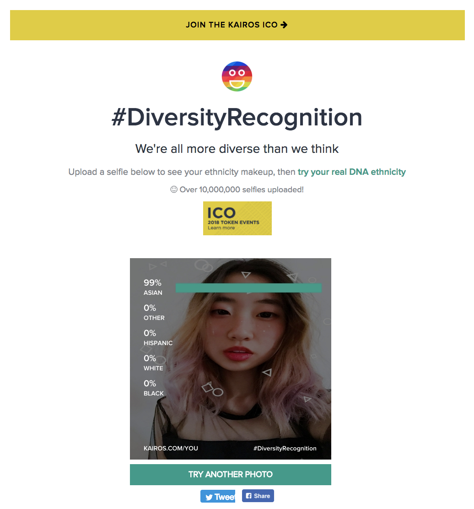

Google’s Arts & Culture mobile app was designed in a way to promote fine art and make it more accessible to the general public. The app features elements like maps to show you where the closest museum is or interesting articles about contemporary art. What made this app special was that Google figured out that the way to get people more interested in the arts was to cater to our narcissism—selfies. The app recently went viral because although the app uses an extensive library of historical art photos, it became controversial when people realized that there was a severe lack of data for minority faces. When first downloading the app, it was also confusing to reach the selfie feature because the first screen was a featurette of written articles related to art. It was interesting to see that the app included other features that related to motivating people to become involved in the cultural zeitgeist. The overall user interface design is very flat, but it utilizes the intuitive desire to scroll well. The app also includes a pop-up menu for you to connect your Google account as well as a horizontal menu at the bottom for user navigation. To get to the selfie portion of the app, users had to scroll a couple of times to get to a different box. When the user enters the selfie portion of the app, it opens the camera for users to take a photo. After the user can swipe to see what paintings their faces match. When I tried the app several times with different pictures of myself, it was difficult to find a face that I agreed looked like me. I often received paintings of Asian faces that didn’t resemble me, but were probably only chosen because Google’s algorithm recognized that I was Asian. For my project, I would ideally like to build a larger database for diverse peoples to be able to feel included in the canon of art. The canon of art is generally very problematic because there is a lack of women and a lack of diverse races. My final project may not be able to solve that problem, but may be able to bring awareness to more contemporary artists or critique art historians’ treatment of art created by the “other.”
Kairos is a web-based application that takes a photo and analyzes your ethnicities based on artificial intelligence. Kairos claims that by using its face recognition program, businesses will be able to better cater to their audiences and eventually make their businesses as diverse as possible. The company claims to use a multitude of factors to collect its “Human Analytics.” What was interesting about the program was that Kairos recently teamed up with a 14-year old to build an application that would help patients with Alzheimer’s recognize their loved ones. (The app is still being built, but it’s called Timeless.) Kairos’s website design is very minimal and it mostly uses flat icons and typography to communicate and market its product. The interface when trying out Kairos is even simpler. The user can upload an image of their face and within seconds, Kairos’s artificial intelligence analyzes what your racial background is. This app could benefit tech companies in Silicon Valley especially because of tech’s overwhelmingly lack of research into their facial recognition products. However, Kairos also has its drawbacks as its racial categories are not nearly complex enough. (For instance, what does the “Other” category mean? Though I will recognize the fact that it is difficult to code for diversity.) For my final project, I would like to use an app similar to Kairos that accurately recognizes the person’s racial background in order to give the user a more precise response. The problem with both Google’s Arts & Culture app and Kairos is that both applications do not consider the complexities and multidimensional aspects that make up our racial and ethnic identities. I would like to have a final project that either critiques or enlightens these ideas.